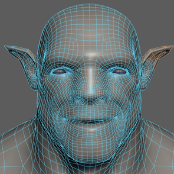
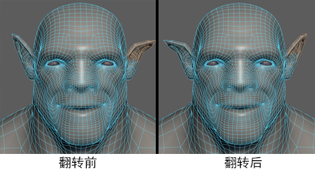

“对称”可沿对称轴复制选定的网格拓扑。您可以使用对称来重新定位不对称的组件，使它们匹配网格另一侧上的拓扑。
要将不对称的组件进行对称，需执行以下操作：
- 选择不对称的组件。（您要重新定位的网格部分。）
在以下示例中，网格的右侧处于选中状态。
.
- 在主菜单栏中，选择“编辑网格 > 对称”(Edit Mesh > Symmetrize)（在“建模”(Modeling)菜单集中）。
- 选择位于接缝上的网格边（对称轴）。
Maya 会重新定位选择以匹配网格另一侧的拓扑。

或者，可以改为使用
“网格 > 翻转”(Mesh > Flip)交换组件的位置。

注： 如果所选对称轴为非平面，则可能会发生各种不同的情况。
- 如果接缝的平面离某一主要轴平面的角度足够近（5 度），则将改为使用该轴。
- 如果接缝的平面离对象或世界空间原点足够近（0.01 个单位），则将使用该位置。否则，将使用接缝的平面中心。
如果发生上述情况之一，Maya 会向您发出警告通知。否则，它将询问您是要展平接缝的平面还是选择其他边。